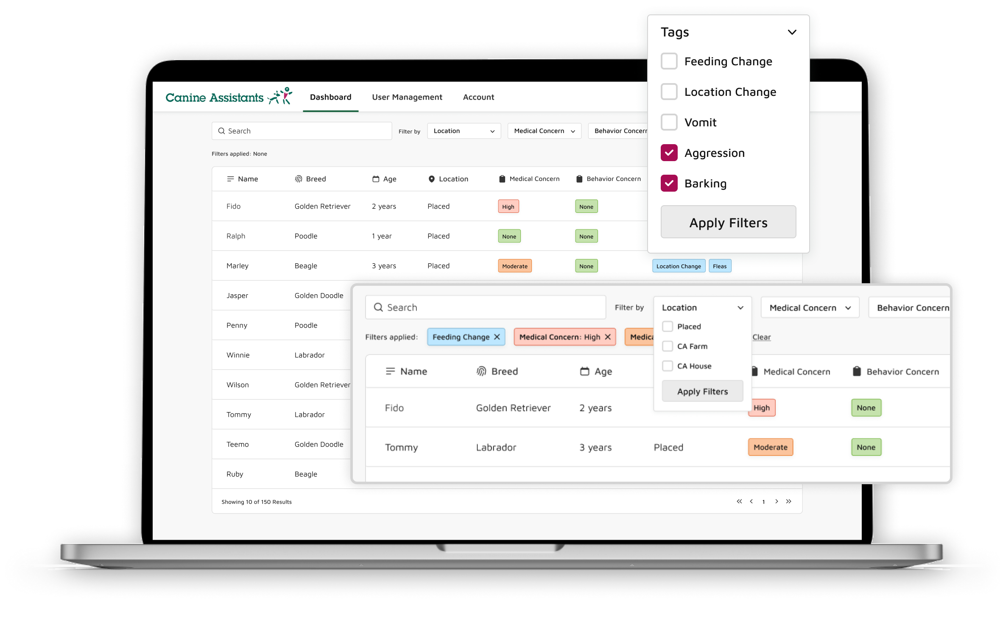
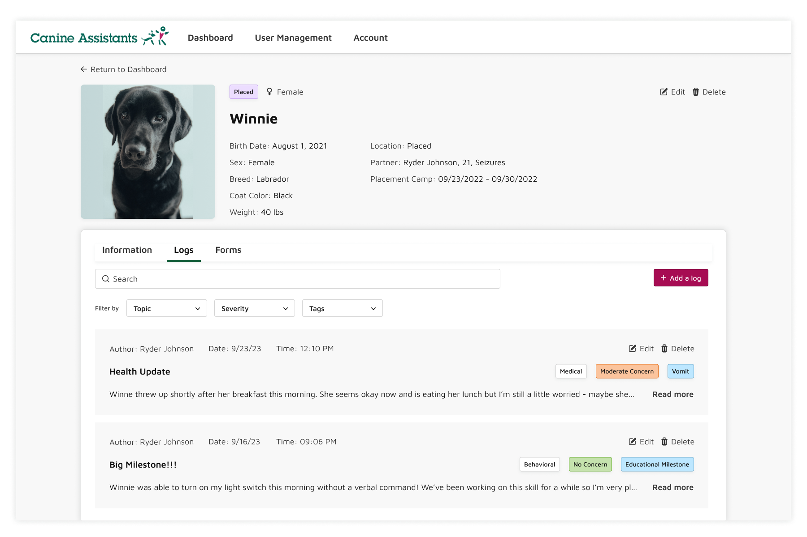
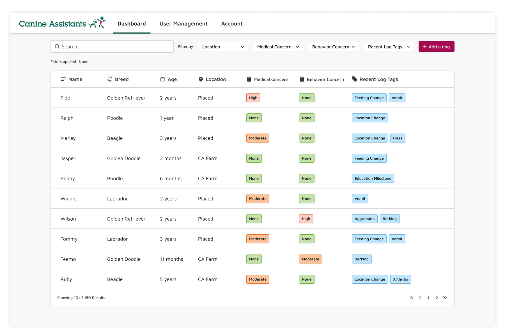
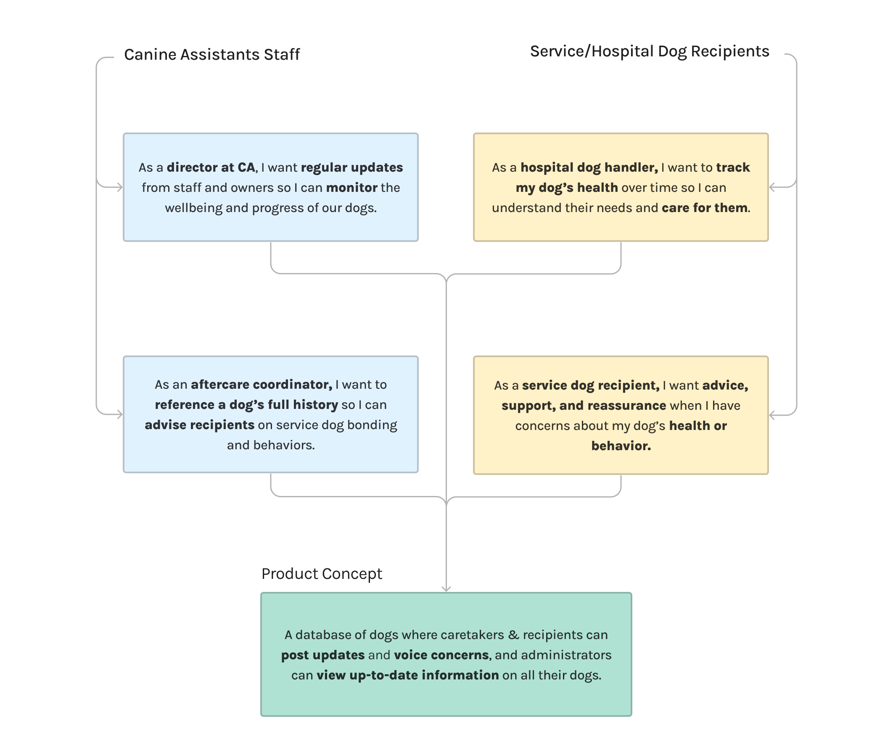
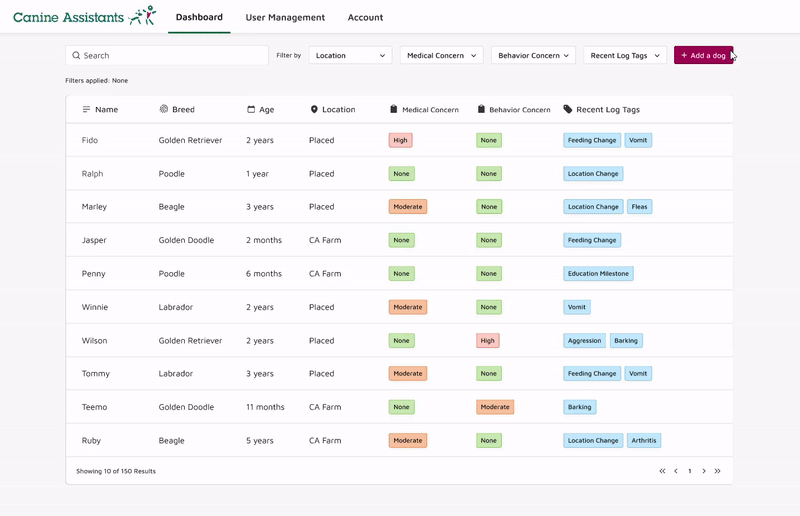
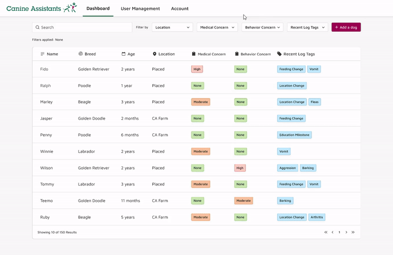
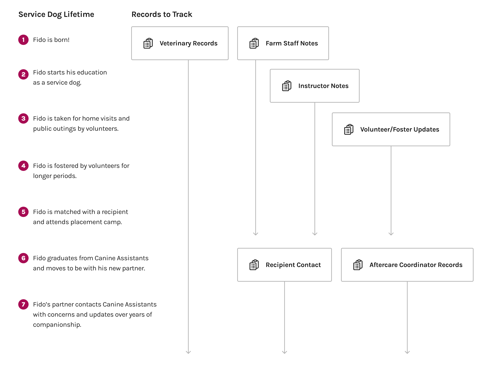
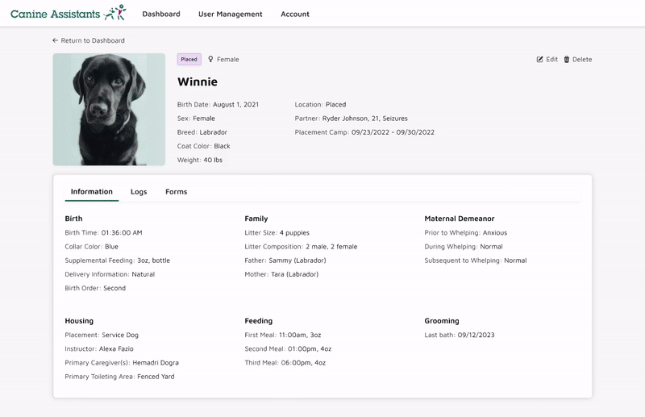
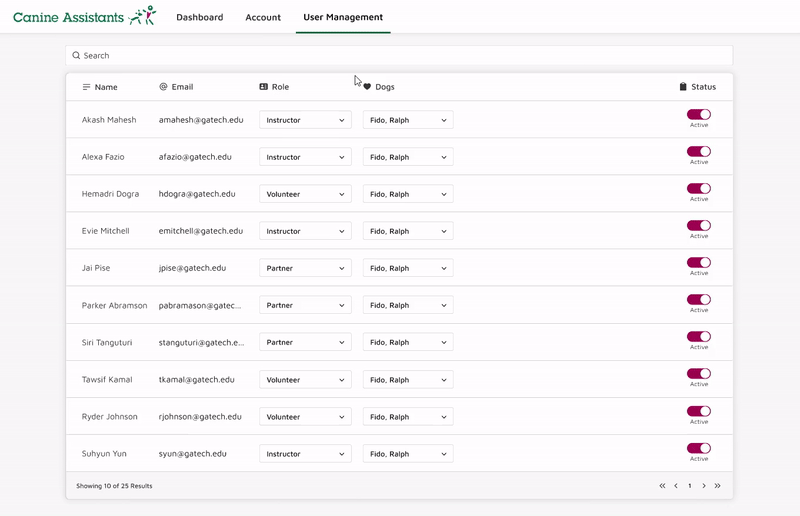
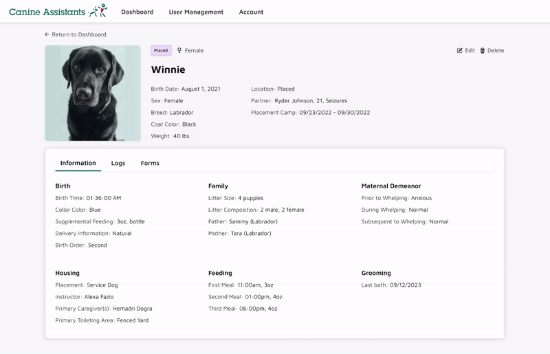

Helping Canine Assistants keep records, track trends, and monitor the health of their service dogs.
- Timeline
- Fall 2023, 12 weeks
- Role
- Product Designer
- Team
- Product manager, engineering manager, 2 designers, 5 developers
- Skills
- User research, sprint planning, product design, Figma

Context
This project was conducted by my team as a part of Bits of Good, a volunteer student organization dedicated to building software for non-profits in the Atlanta area. My responsibilities included user research conducted collaboratively with another designer, feature/functionality planning as part of the leadership team, and creating the design system, branding, and all components. My design partner and I then split design tasks per user flow: I was responsible for the dashboard interactions, adding a new dog, viewing forms, and the individual dog view. My fellow designer created the adding a log flow, but all other designs shown here are my individual work.
Georgia-based non-profit Canine Assistants breeds, raises, and educates service dogs, providing life-saving companions to people with disabilities across the United States free of charge. A family-run operation since 1991, they graduate ~100 service dogs annually, with hundreds living at their farm at any time.
Our research found that Canine Assistants has very little record-keeping of the 150+ dogs in their care, and no system at all for the 2,500+ dogs they've graduated and placed across the country.
The Problem
Canine Assistants has only a few scattered paper records of the dogs currently in their care, and those they've raised and placed in homes and hospitals across the country. They want to keep track of them, keep in contact with the dogs' new owners, monitor their health, and track long-term trends across their population of graduated dogs.
How might we track a service dog's medical, behavioral, and educational history over years of location and caretaker changes?
The Solution
By building a database of comprehensive chronological records, contributed by all the dog's caretakers in standardized, filterable updates.


01Understanding product & user needs
To assess the non-profit's needs and understand how our team could help, we held weekly discussions with the non-profit director, while I conducted user interviews across the Canine Assistants ecosystem. With my partner designer, we spoke with their aftercare point-of-contact, hospital service dog handlers, and volunteers, analyzing themes across the interview results.
By mapping out the goals of each user group, we recognized the need for a consolidated record-keeping system, and defined the basic use cases for interacting with the database.

02Basic features
So, the clear initial goal of our project was to build a database of the dogs in their care, with key information about their health and behavior.
Find records with search, sort, and filtering dogs.


Easily add new dogs to the database.
03Insight: many sources of information
Through continued interviews, I learned more about the needs of our individual user groups.
Aftercare coordinators are bombarded with concerns by anxious new recipients, and have to contact 5+ past caretakers for their records to get a better understanding of the dog's past.

So, we created the chronological log system to consolidate all these sources and records, contributed to by every carer the dog has.

Logs track the dog's health, behavior, and educational progress.
04Insight: different access for different user types
Speaking with the Canine Assistants dog educators, we learned that certain information in a dog's history can bias or mislead their future partners. For example, a volunteer's dramatic record of a single conflict with another dog can cause a service dog's partner to excessively worry about aggressive behavior, even when a dog no longer exhibits any. Canine Assistants doesn't want any issues in a service dog's adolescence to impact the relationship with their partner.
So, we created distinct roles and permissions, allowing users to see only recent and pertinent information on their assigned dog(s).
Differentiated user roles and access levels.

05Insight: standardizing data collection
Canine Assistants' long-term goal is to study and improve dog training techniques, and understand health trends in service dogs. To standardize their data collection, we built out their periodic report system with all the information they care about in numerical, multiple-choice format.

Standardize data collection with monthly check-in forms.
06Next steps
The Canine Assistants project will be carried into next semester and beyond, with a new team of designers and developers continuing to add functionality and iterate improvements on our MVP. To help this along, I organized the design system I created with annotations on use cases and guidelines. And, while we didn't have time for usability testing this semester, I provided an outline of task scenarios to test for next year's designer.
07Learnings ✨
Figma skills
The intricacies of components, variants, variables, styles, and autolayout! I logged a ton of practice with advanced design and prototyping in Figma, and grew a special appreciation for the power of using components across the entire design process 😊
Collaboration >> handoff
There doesn't have to be a strict design → developer “handoff” if it's a collaborative effort across the board! I had a fantastic team in our PM, EM, and developers, and including them in our synthesis of research findings, sketching of features, and early wireframe iterations helped ensure we met each team's goals and designed a feasible, scalable product.